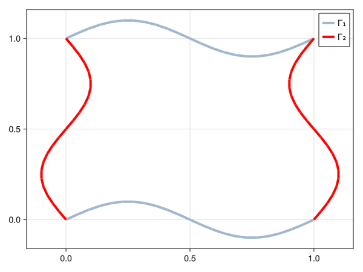
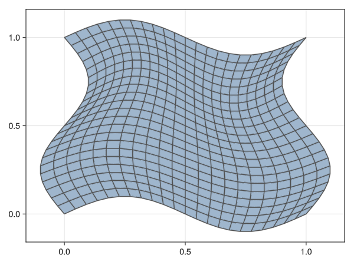

Geometry and meshes
- Combine simple shapes to create domains
- Import a mesh from a Gmsh file
- ...
In the getting started tutorial, we saw how to solve a simple Helmholtz scattering problem in 2D. Since domains and meshes are fundamental to solving boundary and volume integral equations, we will now dig deeper into how to create and manipulate them in Inti.jl.
For more complex geometries, the recommended approach is to use Gmsh to create the geometry and mesh, and then import it into Inti.jl.
Parametric curves
Inti.jl offers a limited support for creating simple shapes for which an explicit parametric representation is available. The simplest of such shapes are parametric_curves, which are defined by a function that maps a scalar parameter t to a point in 2D or 3D space. Parametric curves are expected to return an SVector, and can be created as follows:
using Inti, StaticArrays, Meshes, GLMakie
l1 = Inti.parametric_curve(x->SVector(x, 0.1 * sin(2π * x)), 0.0, 1.0, labels = ["l₁"])
l2 = Inti.parametric_curve(x->SVector(1 + 0.1 * sin(2π * x), x), 0.0, 1.0, labels = ["l₂"])
l3 = Inti.parametric_curve(x->SVector(1 - x, 1 - 0.1 * sin(2π * x)), 0.0, 1.0, labels = ["l₃"])
l4 = Inti.parametric_curve(x->SVector(0.1 * sin(2π * x), 1 - x), 0.0, 1.0, labels = ["l₄"])EntityKey: (1, 5) => Inti.GeometricEntity with labels ["l₄"]Each variable above represents a geometrical entity, and entities can be combined to form a Domain object that can be passed to the meshgen function. For instance, the following code creates a domain formed by three of the four lines, and generates a mesh for it:
Γ1 = Inti.Domain(l1, l3)
Γ2 = Inti.Domain(l2, l4)
Γ1_msh = Inti.meshgen(Γ1; meshsize = 0.05)
Γ2_msh = Inti.meshgen(Γ2; meshsize = 0.05)
fig, ax, pl = viz(Γ1_msh; segmentsize = 4, label = "Γ₁")
viz!(Γ2_msh; segmentsize = 4, color = :red, label = "Γ₂")
axislegend()
Domains can be manipulated using basic set operations, such as union, and intersect:
# Γ = Γ1 ∩ Γ2
Γ = Γ1 ∪ Γ2Domain with 4 entities
EntityKey: (1, 2) => Inti.GeometricEntity with labels ["l₁"]
EntityKey: (1, 3) => Inti.GeometricEntity with labels ["l₂"]
EntityKey: (1, 4) => Inti.GeometricEntity with labels ["l₃"]
EntityKey: (1, 5) => Inti.GeometricEntity with labels ["l₄"]Transfinite squares
Note that you can also combine the lines to form a transfinite square, which inherits its parametrization from the lines that form it:
surf = Inti.transfinite_square(l1, l2, l3, l4; labels = ["Ω"])
Ω = Inti.Domain(surf)
msh = Inti.meshgen(Ω; meshsize = 0.05)
viz(msh; showsegments = true)
Note that the msh object contains all entities used to construct Ω, including the boundary segments:
Inti.entities(msh)KeySet for a Dict{Inti.EntityKey, Dict{DataType, Vector{Int64}}} with 5 entries. Keys:
EntityKey: (1, 2) => Inti.GeometricEntity with labels ["l₁"]
EntityKey: (1, 3) => Inti.GeometricEntity with labels ["l₂"]
EntityKey: (2, 1) => Inti.GeometricEntity with labels ["Ω"]
EntityKey: (1, 4) => Inti.GeometricEntity with labels ["l₃"]
EntityKey: (1, 5) => Inti.GeometricEntity with labels ["l₄"]This allows you to index the mesh by Domains, extracting either a new mesh:
msh[Γ1]Inti.LagrangeMesh{2, Float64} containing:
22 elements of type Inti.ParametricElement{Inti.ReferenceHyperCube{1}, StaticArraysCore.SVector{2, Float64}, Inti.var"#27#28"{Inti.var"#97#98"{Main.var"Main".var"#1#2"}, Inti.HyperRectangle{1, Float64}}}
22 elements of type Inti.ParametricElement{Inti.ReferenceHyperCube{1}, StaticArraysCore.SVector{2, Float64}, Inti.var"#27#28"{Inti.var"#97#98"{Main.var"Main".var"#5#6"}, Inti.HyperRectangle{1, Float64}}}or a view of the mesh:
view(msh, Γ1)Inti.SubMesh{2, Float64} containing:
22 elements of type Inti.ParametricElement{Inti.ReferenceHyperCube{1}, StaticArraysCore.SVector{2, Float64}, Inti.var"#27#28"{Inti.var"#97#98"{Main.var"Main".var"#1#2"}, Inti.HyperRectangle{1, Float64}}}
22 elements of type Inti.ParametricElement{Inti.ReferenceHyperCube{1}, StaticArraysCore.SVector{2, Float64}, Inti.var"#27#28"{Inti.var"#97#98"{Main.var"Main".var"#5#6"}, Inti.HyperRectangle{1, Float64}}}viz(view(msh,Γ1); segmentsize = 4, label = "view of Γ₁")
axislegend()Makie.Legend()